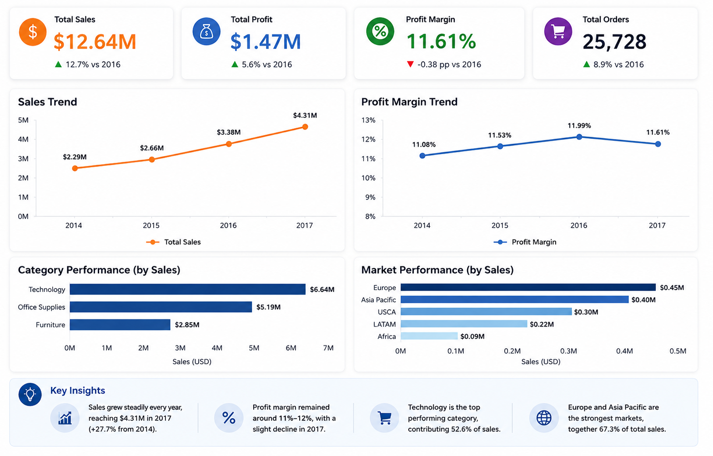

Industry
Global Retail & E-commerce
Global Retail Profitability Case Study
Turning global sales, discount and return data into focused profitability decisions.

01
Industry
Global Retail & E-commerce
Business Scenario
Profitability & Discount Strategy
Role
Business & Data Analyst
Analysis Period
2014–2017
Tools
PostgreSQL · Python · Tableau
Data Model
Orders · Returns · People
Analysis Focus
Growth · Profit · Discounts · Returns
Deliverables
SQL · Notebook · Dashboard · Report
02
A global retail business is achieving continued sales and order growth across multiple markets. However, topline expansion alone does not show whether growth is financially sustainable. Profitability varies across products and regions, while discounting and product returns may weaken the quality of revenue.
Management therefore needs a clearer view of where profit is being created or lost, which discount practices require intervention and whether return behaviour is concentrated in specific types of orders. This project combines three business tables to evaluate growth quality and identify targeted actions that protect profit without applying broad restrictions to all discounts.
03
The analysis was designed to answer five core profitability questions.
01
02
03
04
05
04
01
Defined the profitability questions, analytical scope and decision requirements.
02
Cleaned the orders data and prepared deduplicated returns and market reference tables.
03
Joined orders, returns and people data while preserving all order records and preventing duplicated returns from inflating results.
04
Calculated annual KPIs, year-over-year changes, discount bands and market-level profitability.
05
Used Python to validate outputs, organise the analytical narrative and support reproducible reporting.
06
Built an executive Tableau dashboard and translated findings into focused commercial actions.
05
Global Superstore recorded continued sales and order growth from 2014 to 2017, while overall profit margin remained relatively stable at approximately 11%–12%. This indicates that the business expanded without a broad collapse in profitability.
However, growth quality showed signs of pressure. Average order value declined over time and profit-margin momentum weakened in 2017. The most significant risks were not distributed evenly across the business: high-discount losses were concentrated in selected sub-categories and markets.
Order-level analysis also showed that high-discount orders generated lower profit margins and higher return rates than non-high-discount orders. The recommended response is therefore not to remove discounts across the board, but to introduce targeted controls for high-discount, loss-making product-market combinations.
06
The Tableau dashboard provides an executive view of sales, profit, order volume and profit margin, supported by annual trends and category- and market-level performance.
07
01
Annual revenue and order volume increased from 2014 to 2017, confirming continued commercial expansion across the global business.
02
Profit margin stayed near 11%–12%, while average order value declined and margin momentum softened in 2017, suggesting that volume growth was carrying more of the expansion.
03
Loss exposure was strongest in selected sub-categories, including Tables, Bookcases, Machines, Phones, Storage and Chairs, particularly under high-discount conditions.
04
Compared with other orders, high-discount orders produced lower profit margins and higher return rates, indicating that aggressive discounting may create additional downstream cost.
08
| Priority | Recommended Action | Expected Business Impact |
|---|---|---|
| High | Introduce approval thresholds for high-discount orders in persistently loss-making sub-categories. | Reduce avoidable margin leakage without removing commercially useful discounts. |
| High | Review high-discount product-market combinations with both negative profit and elevated return rates. | Focus intervention on the areas with the highest combined financial risk. |
| Medium | Track profit margin and average order value alongside sales growth in monthly management reporting. | Improve visibility into growth quality and detect margin pressure earlier. |
| Medium | Test alternative promotions such as bundles, targeted offers and minimum-spend discounts. | Protect demand while reducing reliance on broad percentage discounting. |
09
Applying the recommendations could improve the quality of growth while preserving the commercial value of selective discounting.
Reduce losses from high-discount transactions in vulnerable products and markets.
Replace broad discount restrictions with focused, evidence-based approval rules.
Identify order groups where discounting and returns combine to create additional financial risk.
Balance sales expansion with profit margin and average order value monitoring.
10
11
This project demonstrates an end-to-end profitability review that connects data preparation, multi-table SQL modelling, order-level analysis, Python validation and executive dashboard reporting.
The analysis goes beyond reporting which products or markets are profitable. It evaluates the quality of growth and isolates the conditions under which discounting becomes financially harmful.
The final recommendation avoids a one-size-fits-all response. Instead, it provides a practical framework for targeted discount governance, margin protection and ongoing management monitoring.
12
Explore the analysis files and supporting project deliverables.
Explore the complete project structure, source files and documentation.
View Repository → AnalysisReview the queries used for KPI, discount, market and return analysis.
Browse SQL Scripts → NotebookRead the documented workflow, validation steps and analytical conclusions.
View Notebook → DashboardExplore the executive dashboard and performance trends interactively.
Open Dashboard →